左：已确认的 HTML 原型；右：同一 1340×880 窗口下的实际程序截图。 逐页核对并返工后列出差异处理结果。
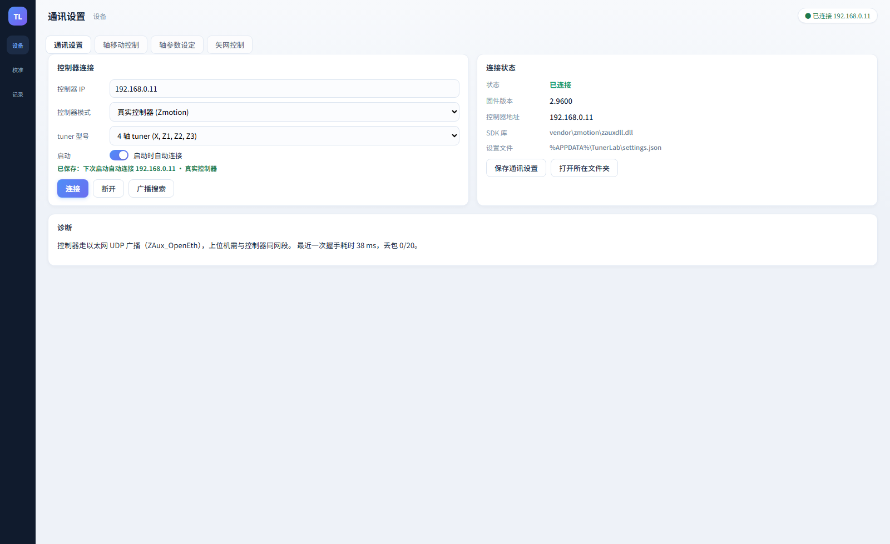
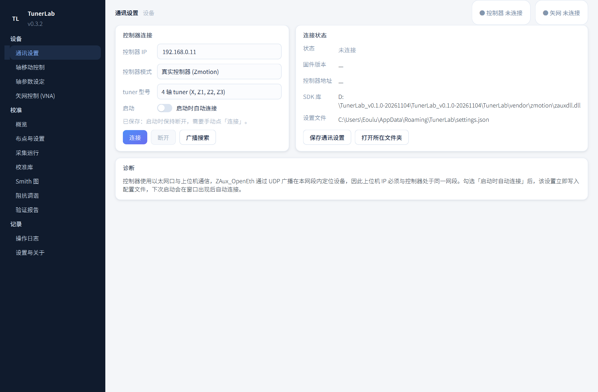
| 侧栏 | 方案为 64 px 图标轨；实现按你的要求保留 236 px 两级导航（设备/校准/记录 + 二级页面） |
| 顶栏 | 56 px：17 px/700 标题、12 px/300 面包屑；右侧改为「控制器 / 矢网」两枚独立徽标，各自显示连接状态与 IP |
| 字号 | 全部改为像素字号：正文 13、标签 11.5/400 #8496ad、值 12.5/500、提示 11.5/300 |
| 卡片 | 圆角 12、1 px #e6ecf5、投影 0 2 6 rgba(16,27,45,.04) |
| 开关 | 34×19 自绘 ToggleSwitch（#dbe4f0 轨道 / 蓝紫渐变 on、白钮、200 ms 缓动）；整行可点，勾选即写盘 |
| 输入 | 数字框上下箭头已移除，与方案的纯文本输入一致 |
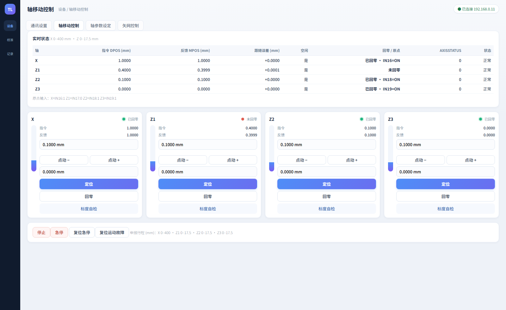
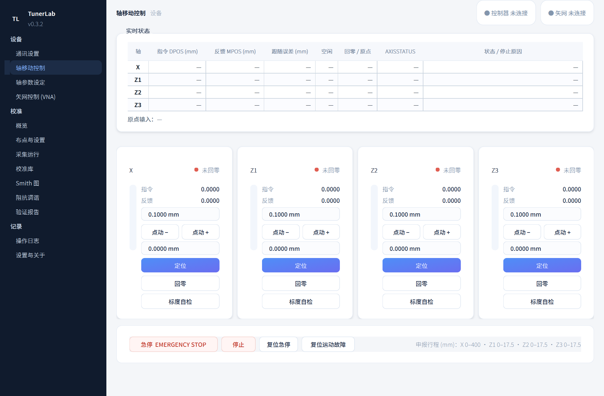
| 竖条 | 自绘 AxisBar：16×146、#f2f6fc 轨道、圆角 8、蓝→紫竖向渐变，180 ms 缓动 |
| 卡片 | 内边距 12、头部间距 8、名称 13.5/600、指示灯 9 px（绿 #20b57f / 红 #e05e52） |
| 行距 | 指令/反馈 11.5 px（标签 #8496ad、值 #22304a），控件间距 6 |
| 控件 | 输入与按钮 12.5 px、高 30；定位为蓝紫渐变主按钮，回零/标度自检为描边 |
| 操作栏 | 去掉原「全局操作」组标题，改为方案 5 的无标题白卡；顺序 急停 → 停止 → 复位急停 → 复位运动故障，急停加宽至 196 px 并标注 EMERGENCY STOP |
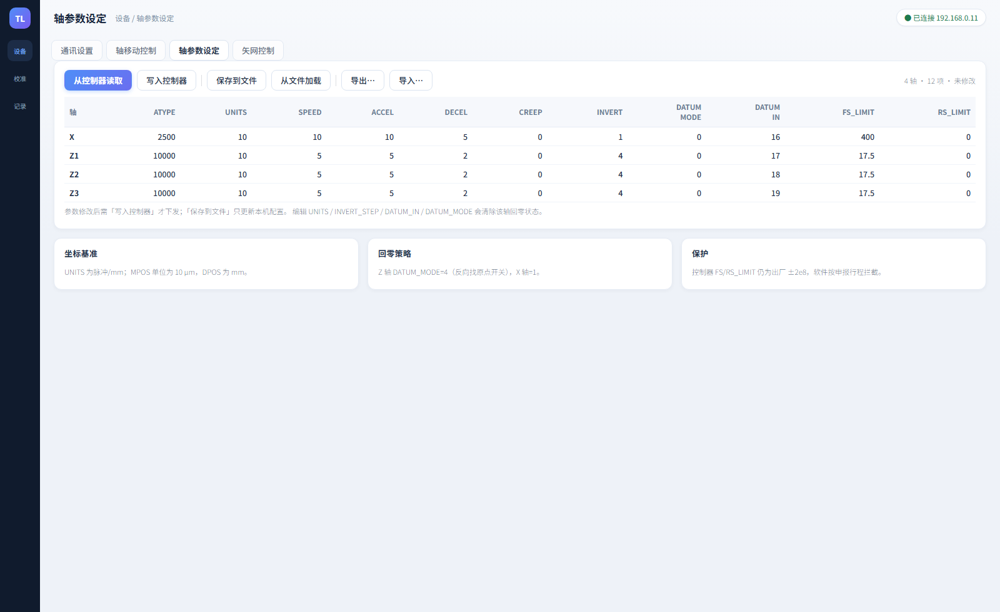
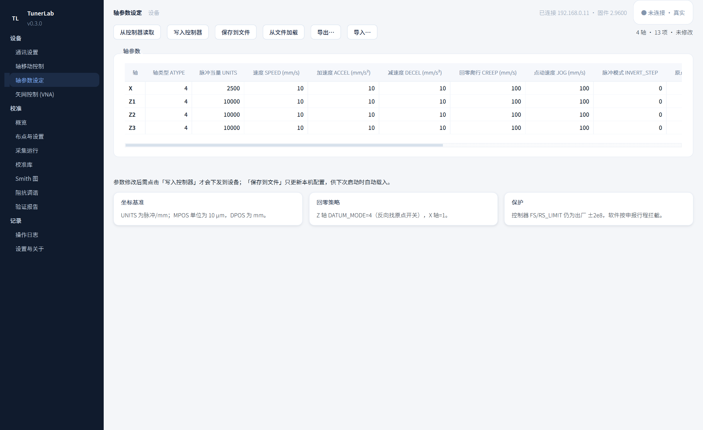
| 工具条 | 六个按钮 + 右侧“4 轴 · 13 项 · 未修改”，字号 11.5/300 |
| 表格 | 单元格 12.5、表头 11.5/600 #6b7d95，行高 28 |
| 说明卡 | 坐标基准 / 回零策略 / 保护 三张卡，圆角 12、内边距 16/12 |
| 留白 | 页面 22/0/22/18，卡片间距 14 |
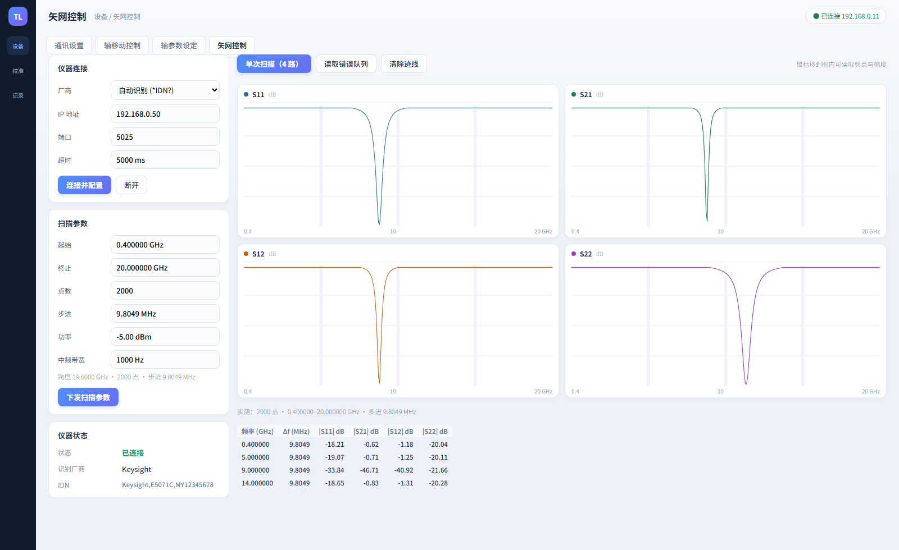
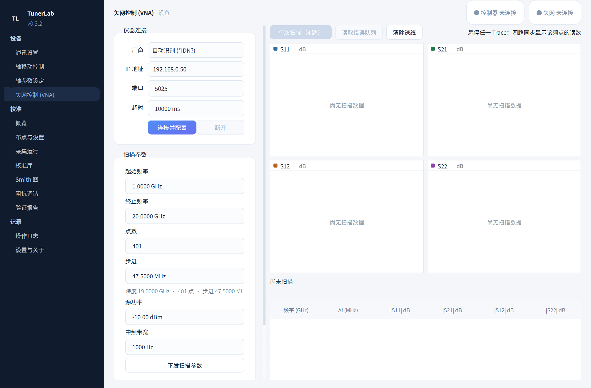
| 控制栏 | 固定 330 px，可纵向滚动；三张卡与方案一致 |
| 输入 | 数字框无箭头，频率 4 位小数、其余同方案 |
| 迹线 | 2×2 白卡 + 圆点 + 名称/单位，空态显示“尚无扫描数据” |
| 表格 | 频率 / Δf / 四路 S 参数，11.5 px，实测与设定不一致红字提示 |
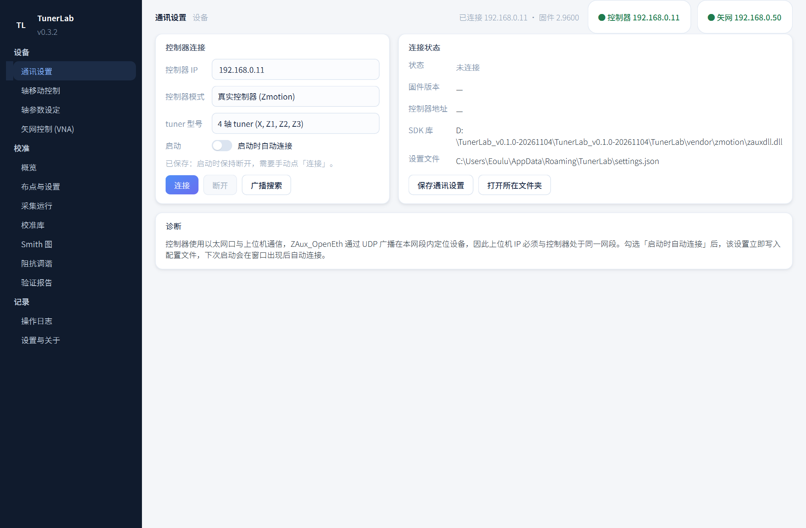
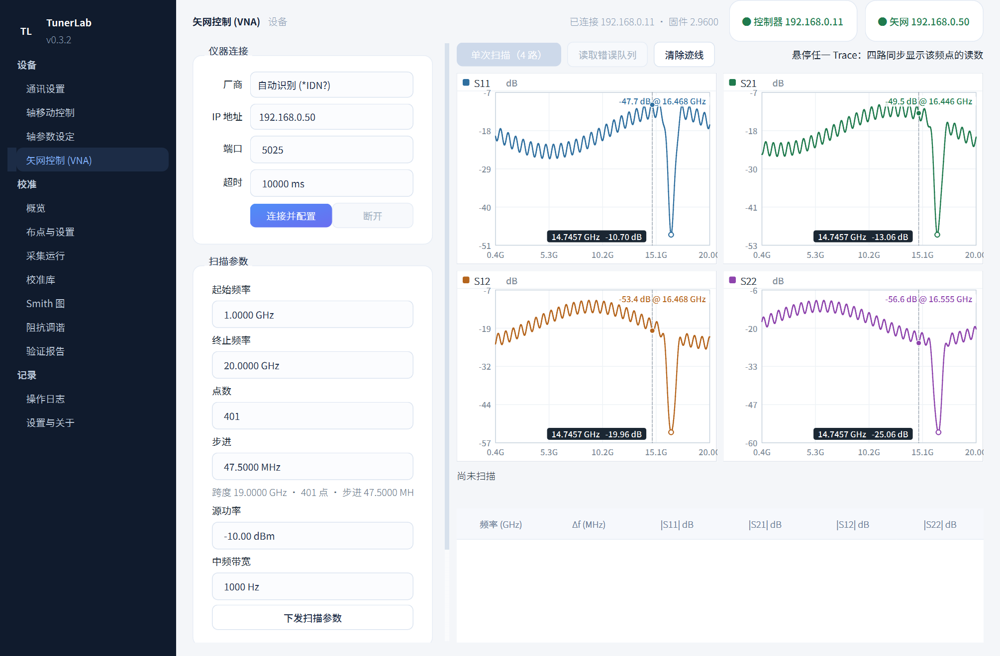
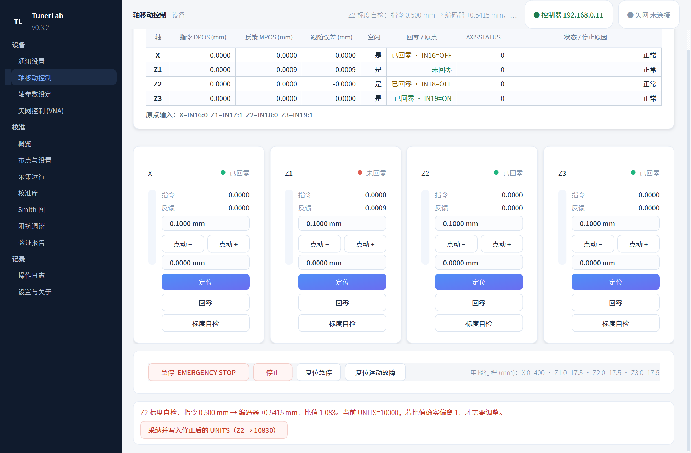
| 徽标 | 连接状态变化即刷新（此前只在启动时写一次，出现「已连接却显示未连接」）；控制器与矢网各一枚，分别显示各自 IP 与固件/IDN 提示 |
| 光标 | TracePlot 发出 cursor_moved(Hz)，VNA 页广播到四图；各图按自身曲线取最近点并显示该点读数，60 ms 防抖避免跨图时闪烁 |
| 开关 | 改用自绘 ToggleSwitch（34×19、200 ms 缓动），修掉 QSS 贴图在缩放桌面下只剩半圆弧的问题；整行（开关 + 文案）均可点击 |
| 操作栏 | 急停最左、196 px 宽、浅红底，标注 EMERGENCY STOP；其后为停止 / 复位急停 / 复位运动故障，右侧行程提示 11.5 px |
| 标度自检 | 结果卡补回（原先两个控件在页面重建时被删，点击即报 C++ object deleted）；出结果时自动滚入视野，通过时只显示「一致」，偏离时给出可点的 UNITS 修正按钮 |